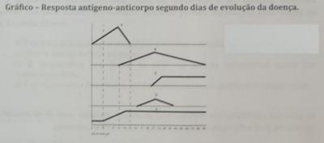

Questão 1 · Sinais de alarme · 4000120039Um paciente de 25 anos de idade foi ao pronto-socorro com queixa de febre há três dias, mialgia, cefaleia retro-orbital e petéquias. Ao concluir o exame físico, o médico detectou dois sinais de alarme presentes no paciente. Com base nessa situação hipotética, assinale a alternativa que apresenta, correta e respectivamente, a doença a ser o diagnóstico principal e os dois exemplos de sinais de alarme para a doença.
A dengue e vômitos persistentes e redução do hematócrito
B malária e ascite e letargia
C dengue e sangramento de mucosa e aumento progressivo do hematócrito
D leptospirose e dor abdominal e derrame pericárdico
E sarampo e hipotensão e má perfusão periférica
Questão 2 · Epidemiologia · 4000119048A dengue é uma doença que afeta todos os níveis sociais e contribui com significativa carga de doença, com importante impacto econômico e social nas populações das áreas endêmicas. I - Quando se analisa a distribuição geográ ca da incidência dos casos prováveis de dengue entre 2003 e 2019 os casos de dengue estão distribuídos em todo o território nacional, com menor incidência nos municípios da região Sul. II - Entre 2003 e 2019 os municípios das regiões Centro-Oeste e Sudeste concentram o maior número de casos. III - Também no período de 2003 e 2019, os estados de Goiás, Mato Grosso, Ceará, Mato Grosso do Sul e Espírito Santo, tem médias do coeficiente de mortalidade até três vezes menor que o nacional. Está(ão) correta(s) a(s) afirmação(ões)? Está(ão) correta(s) a(s) afirmação(ões)?
A Apenas a I está correta.
B Todas estão corretas.
C Apenas a I e II estão corretas.
D Apenas a II e III estão corretas.
Revisar: possível letra faltando em enunciado
Questão 3 · Quadro clínico · Epidemiologia · 4000118992Chikungunya é uma arbovirose causada pelo vírus CHIKV pertencente ao gênero Alphavirus, família Togaviridae, transmitido por mosquitos do gênero Aedes: I - A doença é caracterizada por fortes dores articulares e febre, podendo tornar-se crônica, com persistência dos sintomas por anos. II - Entre 2014 e 2019 a maior concentração de casos e óbitos ocorreu na região Nordeste. III - Em 2018 e 2019, os casos estão concentrados no estado do Rio de Janeiro, que é o primeiro local com transmissão importante fora da região Nordeste. Está(ão) correta(s) a(s) afirmação(ões)?
A Todas estão corretas.
B Apenas a I e II estão corretas.
C Apenas a I está correta.
D Apenas a II e III estão corretas.
Questão 4 · Epidemiologia · Quadro clínico · Vetores · 4000117251Em relação à Dengue assinale a alternativa correta:
A A orientação para os pacientes com febre hemorrágica da dengue é aumento da hidratação venosa e repouso em casa.
B Somente devem ser notificados os casos confirmados de Dengue.
C Em crianças menores de 1 ano pode ocorrer a forma hemorrágica se a criança tiver anticorpos anti-dengue adquiridos da mãe durante a gestação.
D O mosquito
E A febre é o correspondente clínico mais importante da doença, cuja viremia dura em torno de dez a quatorze dias.
Questão 5 · Sinais de alarme · 4000117002Adolescente de 13 anos, sexo masculino, portador de anemia falciforme, há 4 dias apresenta febre, mialgia, cefaléia, hiporexia, náuseas e vômitos persistentes. Ao exame: hipocorado (+/4+), eupneico, acianótico, desidratado. Ausculta cardíaca e pulmonar fisiológicas, abdome doloroso à palpação em epigastro, presença de petéquias em antebraço. Pa: 110 x 80mmhg, fc=96bpm, prova do laço positiva. Diante desse quadro, considera-se sinal de alarme
A algum grau de desidratação.
B presença de petéquias.
C vômitos persistentes.
D prova do laço positiva.
E ser portador de anemia falciforme.
Questão 6 · Prova do laço · 4000112527Qual é o achado do teste do laço positivo num paciente com dengue?
A >= 10 petéquias num quadrado de 2,5 cm de lado
B >= 20 petéquias num quadrado de 2,5 cm de lado
C >= 40 petéquias num quadrado de 4,0 cm de lado
D >= 50 petéquias num quadrado de 4,0 cm de lado
Questão 7 · Dengue · 4000100689Sobre o manejo da Dengue, assinale a alternativa CORRETA:
A O exantema clássico na Dengue, presente em 50% dos casos, atinge face, tronco e membros de forma aditiva, podendo apresentar-se com ou sem prurido, frequentemente no início da febre.
B A prova do laço deve ser realizada em todas as pessoas com suspeita de Dengue. A prova será positiva se houver mais de 20 petéquias em adultos e mais de 10 petéquias em crianças.
C A impossibilidade de seguimento ou retorno à unidade de saúde não é critério de internação hospitalar no caso de pessoas classificadas como Grupo A no fluxograma do manejo da dengue. O acompanhamento é ambulatorial.
D Em caso de o protocolo local recomendar solicitação de exames de sorologia IgG e IgM no manejo da dengue, estes devem ser solicitados no aparecimento da febre e suspeita da doença, para sua confirmação.
Questão 8 · Classif icação de risco · 4000100645O tratamento para dengue recomendado pelo Ministério da Saúde baseia-se na hidratação adequada, levando em consideração o estadiamento da doença em 4 grupos: A, B, C e D. Considerando essa informação, assinale a alternativa que apresenta uma característica do grupo B:
A Presença de petéquias.
B Prova do laço negativa.
C Oligúria.
D Choque cardiocirculatório.
E Insuficiência respiratória.
Questão 9 · Tratamento · Classif icação de risco · 4000095113Mulher, 36 anos, hígida apresenta febre há 48 horas, de início súbito, associada a artralgia e dor retro-orbitária. No exame da triagem, a paciente apresentava os seguintes sinais vitais: temperatura=38ºC; Pulso=98bpm; PA=108x76 mmHg; FR=22irpm; SaO2=98%, enchimento capilar de 2s. Negava durante a sua consulta dor abdominal, náuseas, vômitos, sangramentos ou outras queixas. Ao exame físico, ausência de hipotensão postural, prova do laço negativa. Você fez a hipótese de Dengue para a situação clínica acima descrita. Em relação à classificação de dengue e a conduta quanto à solicitação de exames para esta paciente no pronto socorro, assinale a alternativa correta.
A Paciente com dengue tipo A, sem necessidade de coleta de exames neste momento. Orientar hidratação oral no domicílio e retorno no primeiro dia sem febre ou mais precocemente se sinais de alarme.
B Paciente com dengue tipo A, sem necessidade de coleta de exames neste momento. Realizar hidratação oral assistida no hospital 80ml/kg/dia (1/3 com solução salina oral e 2/3 com ingestão de líquidos caseiros e orientar hidratação no domicílio, com retorno se sinais de alarme.
C Paciente com dengue tipo B, estando indicada a coleta de exames (hemograma. Realizar hidratação venosa no hospital 20 ml/kg/hora até o resultado do hemograma.
D Paciente com dengue tipo B, com necessidade de coleta de exames neste momento. Realizar hidratação oral assistida no hospital 80ml/kg/dia (1/3 com solução salina oral e 2/3 com ingestão de líquidos caseiros até o resultado.
Questão 10 · Características gerais · Quadro clínico · 4000092725Uma paciente feminina, 30 anos, natural e procedente de Florianópolis, é atendida na emergência com febre, dor abdominal intensa e vários episódios de vômitos. Refere que há 5 dias apresenta febre, cefaleia frontal de forte intensidade e mialgias difusas. Lembra- se de ter sofrido picadas por mosquitos há cerca de uma semana. Ao exame a paciente está desidratada ++/4, temperatura axilar de 37,4°C, pressão arterial de 110/70 mmHg, frequência cardíaca de 96 bpm, dor à palpação de quadrante superior direito do abdome, com hepatimetria de 14 cm. Exames complementares: Hemoglobina 14,8 mg/dL. Hematócrito de 50%, leucograma com 3900/mm³, contagem de plaquetas 71.000/mm³ e prova do laço positiva. Diante disso é levantada a suspeita de dengue. Assinale a alternativa correta em relação ao caso descrito, considerando a hipótese diagnóstica apresentada.
A Conforme a classificação da OMS, o quadro é de dengue com sinais de alerta.
B A paciente pode ser liberada para tratamento domiciliar com hidratação via oral.
C Os sinais de alerta no caso descrito são: cefaleia de forte intensidade, taquicardia e mialgias.
D Está indicada a transfusão de plaquetas para prevenir sangramentos.
E Não é necessário nenhum outro exame de confirmação diagnóstica uma vez que a prova do laço foi positiva.
Questão 11 · Quadro clínico · 4000080936O extravasamento plasmático é um dos principais eventos siopatológicos na dengue e está relacionado à maior gravidade da doença. Clinicamente, a presença de vômitos persistentes, dor abdominal, hipotensão postural, entre outros sinais clínicos, são considerados sinais de alarme que traduzem o referido evento. São exames que confirmam o extravasamento plasmático na dengue
A hematócrito, albumina e ultrassonografia.
B leucograma, PCR e radiografia do tórax.
C dosagem de plaquetas, TGP e sorologia.
D hemograma, VSH e tomografia.
Questão 12 · Quadro clínico · 4000077399Adolescente, 12 anos, é levado à emergência por apresentar febre, exantema generalizado e dores no corpo. Mãe relata que o quadro teve início há dois dias, mas, desde a véspera, apresentava fortes dores nas mãos e pés, inclusive em repouso. Exame físico: facies de dor, febril (38,0ºC), PA= 90 x 60 mmHg, eupneico, exantema discreto com edema dos dedos das mãos e pés, deambula com o auxílio da mãe, queixa-se de artralgia. Exames laboratoriais: SaO₂ = 98%, hemograma normal. A hipótese diagnóstica mais provável é:
A chikungunya
B febre amarela
C leptospirose
D dengue hemorrágico
Questão 13 · Complicações · Quadro clínico · 4000042462Sobre a forma grave da dengue, aponte a afirmativa correta.
A Manifesta-se entre o sétimo e o décimo dia da doença.
B Em crianças, geralmente surge após o quinto dia da doença, acompanhada ou não de defervescência.
C Durante o quadro, é possível encontrar o paciente com choque por conta de extravasamento de líquidos para o terceiro espaço, com diminuição de perfusão de órgãos alvo e rebaixamento do nível de consciência.
D Ocorrem hemorragias graves, por fragilidade capilar, associadas à plaquetopenia e disfunção orgânica.
Questão 14 · Quadro clínico · 4000042446Assinale a alternativa correta quanto às características observadas na fase crítica da dengue clássica.
A Náusea, vômito e dor abdominal, linfadenopatias e exantema macular.
B Surgimento de prurido palmoplantar antes da remissão do exantema.
C Início súbito de febre, geralmente alta, acompanhada de cefaleia e dor retro-orbitária.
D Defervescência, entre 03 a 07 dias após o início dos sintomas.
Questão 15 · Quadro clínico · 4000032526Relacione as principais síndromes clínicas no diagnóstico diferencial da dengue com as suas possíveis causas: COLUNA I - Síndromes Clínicas 1. Síndrome exantemática febril; 2. Síndrome do choque; 3. Síndrome hemorrágica febril; 4. Síndrome dolorosa abdominal COLUNA II - Diagnóstico ( ) Doença de Henoch-Schonlein; ( ) Hantavirose; ( ) Febre purpúrica brasileira; ( ) Pneumonia; Assinale a alternativa que apresenta a sequência CORRETA.
A 2 1 4 3.
B 1 3 2 4.
C 1 2 3 4.
D 2 1 4 3.
Questão 16 · Quadro clínico · 4000032495Sobre a dengue, assinale a alternativa INCORRETA.
A O choque ocorre quando um volume crítico de plasma e perdido através do extravasamento, o que geralmente ocorre entre os dias quatro ou cinco de doença.
B Na criança o início da doença é mais arrastado e o agravamento é mais demorado do que no adulto, por apresentar uma reação imunológica mais frustra.
C São considerados sinais de alarme na dengue a dor abdominal intensa e contínua, vômitos persistentes, letargia dentre outros.
D O espectro clínico consiste de três fases, a febril, a crítica e a de recuperação.
Questão 17 · Quadro clínico · Vetores · Transmissão · 4000031944A respeito da febre Chikungunya podemos afirmar:
A A Febre Chikungunya é uma doença transmitida pelos mosquitos Aedes aegypti e Aedes albopictus. No Brasil, a circulação do vírus foi identificada pela primeira vez em 2014. Chikungunya significa ""aqueles que se dobram"" em swahili, um dos idiomas da Tanzânia. Refere-se à aparência curvada dos pacientes que foram atendidos na primeira epidemia documentada, na Tanzânia, localizada no leste da África, entre 1952 e 1953.
B É possível ter chikungunya mais de uma vez. Depois de infectada, a pessoa fica imune apenas por um período da vida. Os sintomas iniciam entre dois e doze dias após a picada do mosquito. O mosquito adquire o vírus CHIKV ao picar uma pessoa infectada, durante o período em que o vírus está presente no organismo infectado. Cerca de 30% dos casos não apresentam sintomas.
C Os sintomas são tratados com medicação para a febre (preferencialmente AAS e as dores articulares (corticoides.
D Quando há notificação de caso suspeito, as Secretarias Municipais de Saúde devem adotar ações de relocação da população pois a eliminação de focos do mosquito nas áreas próximas à residência não é suficiente.
Questão 18 · Tratamento · Diagnóstico · Sinais de alarme · 4000019626Uma mulher procedente da Serra/ES, 42 anos, diabética está em atendimento no PS devido relato de febre, artralgia e mialgia generalizadas associadas a cefaleia há 4 dias. Informa que hoje iniciou dor abdominal difusa e forte. Normotensa e confortável em ar ambiente durante exame. Qual a conduta inicial recomendada:
A Sintomáticos, hidratação oral e retorno se piora
B Notificação de dengue com solicitação de sorologia, hemograma, hidratação oral e reavaliação após hemograma
C Notificação de dengue com solicitação de sorologia, Internação por no mínimo 48h, hidratação endovenosa, hemograma, proteína, albumina, tipagem sanguínea, gasometria, transaminases e RX de tórax
D Sintomáticos, hidratação endovenosa, sintomáticos e antibióticos empíricos
E Notificação de dengue com solicitação de sorologia, Internação em UTI, hidratação endovenosa, hemograma, proteína, albumina, tipagem sanguínea, gasometria, transaminases e RX de tórax
Questão 19 · Complicações · 4000013457A respeito de doenças infecciosas durante a gravidez, julgue o item que se segue. A dengue durante a gravidez pode cursar com complicações clínicas maternas, porém não aumenta a taxa de complicações obstétricas.
A Certo.
B Errado.
Questão 20 · Tratamento · Sinais de alarme · Quadro clínico · 4000012322Mulher, 17 anos de idade, apresenta febre alta, cefaleia, dores articulares e prostração há dois dias. Mora na cidade de São Paulo e nega viagens recentes. Refere vacinação em dia. Seu pai, de 48 anos, apresentou quadro semelhante há uma semana. Exame físico: T= 38,5 ° C, FC = 108 bpm, exantema maculopapular difuso, enchimento capilar lento, dor intensa à palpação do abdome, sem visceromegalias. Indique o diagnóstico mais provável e a conduta.
A Sarampo; hidratação oral e analgésicos
B Sarampo; internar para observação
C Dengue; hidratação oral e observação
D Dengue com sinais de alerta; internar para hidratação endovenosa
E Chikungunya; internar para diagnóstico e observação
Questão 21 · Quadro clínico · Quadro clínico · Quadro clínico · 4000009645Com relação às características clínicas das arboviroses, assinale a alternativa CORRETA:
A A febre aparece em cerca de 90% dos casos na infecção pelo Zika Vírus.
B A mialgia é mais frequente no Zika Vírus do que na dengue.
C O exantema é um sinal clínico de alta prevalência entre as arboviroses.
D A cefaleia é mais frequente na doença de chikungunya.
Questão 22 · Tratamento · Classif icação de risco · 4000125713Escolar, 7 anos, peso de 22 Kg, sexo feminino, inciou quadro de febre há 4 dias. Mãe refere que criança apresenta também mialgia, cefaleia, dor retro-orbitária e diminuição do apetite. Há 1 dia apareceram manchas pruriginosas por todo corpo. Hoje está muito sonolenta. Ao exame BEG-REG, prostrada, corada, eupneica, acianótica, sonolenta. Presença de exantema maculo-papular difuso (inclusive mãos e pés) e prova do laço positiva. Restante do exame físico sem alterações. Qual é a conduta a ser tomada?
A Prescrever hidratação domiciliar com volume de 80/ml/Kg/dia, sendo 1/3 de soro de reidratação oral e 2/3 de líquidos caseiros, e retorno no dia da melhora da febre.
B Solicitar hemograma, manter o paciente em observação até o resultado e prescrever hidratação oral com 80 ml/kg/dia, sendo 1/3 de soro de reidratação oral e 2/3 de líquidos caseiros.
C Solicitar exames laboratoriais, de imagem, prescrever reposição volêmica com 10 ml/kg de soro fisiológico 0,9% na 1ª hora e solicitar regulação do paciente.
D Solicitar exames laboratoriais, de imagem e prescrever reposição volêmica com 30 ml/kg em até 20 minutos. Repetir até 3 vezes se necessário e solicitar regulação do paciente.
E Solicitar hemograma, prescrever hidratação domiciliar com volume de 80 ml/kg/dia, sendo 1/3 de soro de reidratação oral e 2/3 de líquidos caseiros, e retorno no dia da melhora da febre.
Questão 23 · Chikungunya · Complicações · 4000124574Qual das artrites virais agudas pode mais comumente cronificar em mulheres com mais de 45 anos de idade?
A Zica vírus
B Hepatite B
C Febre chikungunya
D Hepatite C
Questão 24 · Complicações · 4000118951Habitualmente, que momento da doença ocorre o choque da dengue?
A Nas primeiras 24 horas.
B Após a primeira semana.
C Sempre nas primeiras 48 horas da doença.
D Em torno do quarto dia quando a febre desaparece.
Questão 25 · Diagnóstico · 4000116468Paciente de 48 anos com quadro de mialgia, artralgia, febre, cefaleia retro-ocular e petéquias difusas há 2 dias, dá entrada no pronto atendimento de sua cidade, onde está tendo epidemia de dengue. O médico plantonista, suspeitando de tal patologia, imediatamente inicia a hidratação, antitérmico e lhe solicita sorologia de dengue. No entanto, os exames vem com o seguinte resultado: IgM dengue negativo e IgG dengue negativo. Qual a explicação que melhor define o ocorrido?
A Os testes realizados foram de má qualidade e deverão ser repetidos ou realizados em outro laboratório.
B O paciente definitivamente não tem dengue e então deverá ser pesquisada outra patologia.
C Ainda é muito precoce a detecção dos anticorpos de dengue no sangue e então solicitar NS1.
D Certamente houve mutação viral que impediu a detecção da patologia.
Questão 26 · Características gerais · Quadro clínico · 4000115797Segundo o Ministério da Saúde, deve ser considerado caso suspeito de dengue toda criança:
A Com dor abdominal contínua e vômitos persistentes.
B Residente em área com transmissão de dengue, com quadro febril agudo e sem foco de infecção aparente.
C Residente ou proveniente de área com transmissão de dengue, com quadro febril agudo, entre dois e cinco dias e sem foco de infecção aparente.
D Com surgimento de exantema tardio em relação ao início da febre.
Questão 27 · Tratamento · Quadro clínico · 4000113410Sobre Dengue identifique a alternativa correta:
A Em relação aos exames para o diagnóstico da Dengue, o hemograma e a sorologia devem ser realizados a partir do sexto dia de doença.
B O desaparecimento da febre antes de três dias é sinal de mal prognóstico, devendo este paciente ser avaliado com maior atenção.
C O exantema da Dengue, exceto o petequial, não tem relação com a evolução da doença ou a gravidade.
D A administração de volume adequado de fluidos (oral e/ou parenteral) tem importância secundária, sendo mais indicada na apresentação com choque/hipotensão da Dengue.
E O paciente com Dengue deve ser reavaliado com frequência, quando internado, e a contagem de plaquetas e o leucograma são os principais parâmetros laboratoriais para acompanhamento.
Questão 28 · Diagnóstico · 4000111108Paciente de 48 anos com quadro de mialgia, artralgia, febre, cefaléia retro-ocular e petéquias difusas há 2 dias, dá entrada no pronto atendimento de sua cidade, onde está tendo epidemia de dengue. O médico plantonista, suspeitando de tal patologia, imediatamente inicia hidratação, antitérmico e lhe solicita sorologia de dengue. No entanto, os exames vem com o seguinte resultado: IgM dengue negativo e IgG dengue negativo. Qual a explicação que melhor define o ocorrido?
A Os testes realizados foram de má qualidade e deverão ser repetidos ou realizados em outro laboratório.
B O paciente definitivamente não tem dengue e então deverá ser pesquisada outra patologia.
C Ainda é muito precoce a detecção dos anticorpos de dengue no sangue e então solicitar NS1.
D Certamente houve mutação viral que impediu a detecção da patologia.
Questão 29 · Tratamento · Diagnóstico · Quadro clínico · 4000097965Mulher, 23a, G1P0C0A0, 16ª semana de gestação, procura a Unidade Básica de Saúde referindo quadro de vermelhidão e coceira na pele há 2 dias, acompanhado de um episódio de febre de 38°C, além de dor articular. Exame físico: T = 37,8°C; FR = 18 irpm; FC = 80 bpm; olhos: hiperemia conjuntival; pele: exantema difuso discreto; prova do laço: negativa. A CONDUTA É:
A Solicitar hemograma, AST/ALT, ureia e creatinina, com monitoramento domiciliar da temperatura e retorno diário à Unidade.
B Solicitar reação em cadeia da polimerase para Zika vírus e dengue; retorno diário para hemograma e hidratação domiciliar.
C Solicitar sorologia para Zika e para dengue; retorno diário para hemograma e hidratação domiciliar.
D Solicitar sorologia para febre amarela e Chikungunya, prescrever sintomáticos e hidratação domiciliar.
Questão 30 · Quadro clínico · Quadro clínico · 4000082243Baseado na orientação do Ministério da Saúde, há evidências clínicas e laboratoriais que ajudam no diagnóstico diferencial entre as arboviroses. É correto afirmar que:
A artralgia é mais frequente na dengue
B plaquetopenia é mais frequente na dengue
C dor retrorbitária e neutropenia são mais frequentes na chikungunya
D o exantema da chikungunya surge normalmente do 6° ao 8° dia após o início da febre
Questão 31 · Características gerais · Zika · Chikungunya · 4000077714Paciente de 12 anos de idade, previamente hígido, após excursão em área de mata para acampamento de escoteirismo, apresenta febre intensa, três dias de evolução, prurido cutâneo leve, poliartrite, com edema de mãos e pés, mialgia e exantema inespecífico. Com base nos dados citados, o diagnóstico mais provável e a evolução possível são:
A Zika e evolução para cronicidade.
B Dengue com evolução para dengue hemorrágica.
C Chikungunya e evolução para cronicidade.
D Zika sem risco de evolução para cronicidade.
E Chikungunya com risco de hemoconcentração.
Questão 32 · Quadro clínico · Quadro clínico · Quadro clínico · 4000071923Assinale a assertiva correta em relação as arboviroses.
A O diagnóstico diferencial entre o dengue, a zika e o chikungunya se faz pela presença ou não de dor articular.
B O acometimento neurológico ocorre exclusivamente na síndrome da zika congênita.
C As crianças menores de 1 ano têm maior risco de complicações clínicas quando acometidas pelo vírus zika.
D A conjuntivite é uma manifestação rara na infecção pelo chikungunya.
E A febre no dengue geralmente é mais elevada do que na zika, enquanto o rash é mais tardio.
Questão 33 · Quadro clínico · Zika · Diagnóstico · 4000068319Considerando um paciente com três dias de febre alta, artralgias simétricas intensas e com edema, e que apresentou exantema no 2°/3° dia de doença, é possível afirmar que:
A Os diagnósticos mais prováveis são febre Chikungunya e infecção pelo vírus Zika, pela presença de febre alta e artralgias, devendo as sorologias serem solicitadas.
B O diagnóstico poderia incluir febre Chikungunya e dengue, sendo útil o exame NS-1 neste momento da investigação.
C O diagnóstico poderia incluir infecção pelo zika e febre Chikungunya, considerando o exantema precoce, devendo o exame NS-1 ser pedido.
D O diagnóstico inicialmente poderia incluir qualquer arbovirose, mas a ausência da hiperemia conjuntival e do prurido afasta a possibilidade de Chikungunya.
E O diagnóstico inicialmente poderia incluir qualquer arbovirose, mas a ausência de manifestações hemorrágicas afastaria a dengue.
Questão 34 · Complicações · Quadro clínico · Zika · 4000067834Tendo em vista as arboviroses febris agudas, dentre as afirmativas a seguir, marque a afirmativa verdadeira.
A A forma grave (hemorrágica) do dengue é caracterizada por Coagulação Intravascular Disseminada (CIVD).
B Na Chikungunya, a forma articular crônica é caracterizada por acometimento reumatoidelike, inclusive com fator reumatoide falso-positivo.
C Dor abdominal, vômitos em jato e diarreia são sinais de alarme para as formas graves do dengue.
D A infecção aguda por Zika na gestante é um motivo legal para a mulher decidir abortar.
E O Zika se caracteriza por febre baixa ou ausente, rash cutâneo (exantema) e hiperemia da mucosa conjuntival.
Questão 35 · Quadro clínico · 4000062408Assinale a alternativa que tem características do Zika Vírus.
A Conjuntivite em 50-90% dos casos; Rash cutâneo no 1° ou 2° dia; Edema de articulações frequente e de leve intensidade.
B Conjuntivite em 50-90% dos casos; Discrasia hemorrágica; Edema de articulações frequente e de leve intensidade.
C Conjuntivite rara; Trombocitopenia; Rash cutâneo no 1° ou 2° dia.
D Conjuntivite rara; Febre alta; Discrasia hemorrágica.
Questão 36 · Febre do Nilo Ocidental · Epidemiologia · Transmissão · 4000060016Arbovírus são vírus transmitidos por artrópodes (Arthropod-borne virus) e são assim designados não somente pela sua veiculação através de artrópodes, mas, principalmente, pelo fato de parte de seu ciclo replicativo ocorrer nos insetos. As arboviroses têm se tornado importantes e constantes ameaças em regiões tropicais, devido às rápidas mudanças climáticas, desmatamentos, migração populacional, ocupação desordenada de áreas urbanas e precariedade das condições sanitárias, que favorecem a amplificação e transmissão viral. A respeito do assunto, considere as seguintes afirmativas: 1. No continente africano, o ciclo da chikungunya (CHIKV) ocorre, essencialmente, em áreas orestadas, envolvendo mosquitos vetores silvestres do gênero Aedes e primatas não humanos. Já no continente asiático, o ciclo de transmissão de CHIKV esteve geralmente associado ao mosquito urbano 2. A maioria dos pacientes infectados com febre do oeste do Nilo é assintomática, mas os sintomas, quando presentes, incluem febre, dor de cabeça, enjoo e vômito. 3. Em 2015, o Brasil registrou os primeiros casos humanos autóctones de zika, confirmando a recente entrada desse arbovírus no país. Os primeiros estados brasileiros a registrar casos de infecção por ZIKV foram Paraná e Rio Grande do Sul. 4. A principal forma de infecção pelo ZIKV é pela picada de fêmeas infectadas do gênero principal vetor no Brasil. Assinale a alternativa correta.
A Somente as afirmativas 1 e 2 são verdadeiras.
B Somente as afirmativas 1 e 4 são verdadeiras.
C Somente as afirmativas 2 e 3 são verdadeiras.
D Somente as afirmativas 3 e 4 são verdadeiras.
E As afirmativas 1, 2, 3 e 4 são verdadeiras.
Questão 37 · Quadro clínico · 4000056514Adolescente de 13 anos apresentou, há um mês, quadro clínico de febre elevada, cefaléia retro-orbitária, dor nas costas, mialgia intensa, náuseas e vômitos. Nas primeiras 48 horas de doença, houve discreto exantema macular que empalidecia à pressão. Este quadro durou cerca de uma semana. Dois dias após a febre ter cessado, surgiu novo exantema generalizado, maculopapular, poupando as mãos e pés e que durou quatro dias. A recuperação do paciente foi completa e a primeira hipótese diagnóstica é:
A parvovirose
B dengue
C exantema súbito
D mononucleose infecciosa
E Febre amarela
Questão 38 · Tratamento · Classif icação de risco · 4000051960Paciente adulto sem comorbidade e sem situação social de risco e com suspeita de Dengue tem indicação para internação hospitalar e hidratação endovenosa se apresentar:
A Derrame pleural.
B Petéquias em pele.
C Antecedente de Dengue.
D Prova do laço positiva.
E NS 1 positivo.
Questão 39 · Tratamento · Prova do laço · Classif icação de risco · 4000050357A infecção pelo vírus dengue é a arbovirose mais incidente no Brasil e a que apresenta maior letalidade. O reconhecimento precoce dos quadros graves é fundamental para evitar desfechos desfavoráveis. Assinale a alternativa CORRETA sobre essa doença.
A A prova do laço deve ser realizada obrigatoriamente em todo paciente suspeito e que não apresente sangramento espontâneo. Na criança, o manguito deve permanecer insuflado durante três minutos, e a prova será considerada positiva, se houver 20 ou mais petéquias em um quadrado com 2,5 cm de lado no antebraço.
B Nas crianças, particularmente nos menores de dois anos, o quadro grave pode ser identificado como a primeira manifestação clínica, pois o início da doença pode passar despercebido.
C O diagnóstico diferencial deve ser estabelecido com outras arboviroses, como chikungunya e zika, sendo útil para diferenciá-las a presença de plaquetopenia que é exclusiva da dengue.
D A presença de algum sinal de alarme caracteriza o grupo C e indica a reposição volêmica imediata com 20 ml/kg de soro fisiológico em até 20 minutos.
E Se o acesso vascular não for rapidamente conseguido, a via intraóssea em crianças deve ser reservada para medicamentos durante a reanimação cardiopulmonar, devendo ser evitada a administração de líquidos.
Questão 40 · Tratamento · Classif icação de risco · 4000042047Um pré-escolar com 6 anos de idade foi levado para a Unidade de Pronto atendimento com história de febre, cefaleia, mialgia há 6 dias. Nega vômitos e hoje surgiram manchas vermelhas e roxas na pele. Ao exame físico, estado geral comprometido, presença de petéquias e equimoses em membros, tronco e abdome. Pressão arterial e frequência cardíaca normais. Prova do laço com 31 plaquetas na área estabelecida. O hemograma do dia apresenta hematócrito = 46%, Leucócitos totais: 1.800 /mm³, plaquetas 21.000/mm³. No segundo dia de febre, a mãe havia levado seu lho e foi feito o hemograma com hematócrito de 38% e plaquetas 131.000/mm³ e o teste rápido para dengue, que foi negativo. Considerando a situação clínica apresentada, a conduta adequada é:
A Tratamento ambulatorial com hidratação oral vigorosa: 50ml/Kg em 4 a 6 horas de soro oral, sob supervisão da equipe de saúde, seguida de reavaliação clínica.
B Tratamento em leito de observação com hidratação oral supervisionada: 50ml/Kg em 4 a 6 horas de soro oral, sob supervisão da equipe de saúde, seguida de reavaliação clínica.
C Tratamento em leito de observação ou hospitalar com hidratação IV imediata: 10 mL/Kg de soro fisiológico na primeira hora e reavaliação clínica e hematócrito após 4 horas e de plaquetas após 12 horas.
D Tratamento em leito de UTI com hidratação IV imediata: 20mL/Kg de soro fisiológico em 20 minutos e monitoramento com hematócrito após 1 hora e de plaquetas após 12 horas.
Questão 41 · Tratamento · Sinais de alarme · 4000039427Paciente do sexo masculino, 34 anos, com quadro de febre alta termometrada (38,9°C) iniciada há 6 dias e associada a dor retro-ocular, mialgia, dor abdominal difusa de leve intensidade e exantema em tronco e MMSS há 4 dias. Procura atendimento médico no sexto dia dos sintomas, relatando que está afebril há 48 horas, mas ainda apresenta mialgia e exantema em melhora. Ao exame, apresenta BEG, hidratado no limiar, acianótico, anictérico e afebril. Prova do laço positiva, PA: 120 x 70mmHg; FC: 98bpm, FR: 18irpm, satO₂: 98% em ar ambiente. Aparelhos respiratório e cardiovascular normais. Abdome: RHA+, plano, ácido com dor leve à palpação de hipocôndrio direito, sem sinais de irritação peritoneal; Murphy negativo. Considerando a hipótese diagnóstica MAIS provável para o caso descrito, assinale a alternativa CORRETA:
A A pesquisa de antígeno viral NS-1 deve ser solicitada para se confirmar o diagnóstico do paciente.
B A dor abdominal intensa e contínua, os vômitos persistentes, os derrames cavitários e a redução da diurese são sinais de alarme dessa doença.
C O tratamento do paciente deve ser realizado em nível ambulatorial, independentemente do resultado dos exames que serão solicitados.
D A hidratação venosa e o controle da mialgia devem ser iniciados preferencialmente com anti-inflamatórios não esteroidais.
Questão 42 · Quadro clínico · Complicações · 4000038775A prevalência da fase crônica em pacientes com chikungunya é bastante variável, segundo os estudos, podendo atingir mais da metade dos pacientes. Os principais fatores de risco para a cronificação são listados abaixo, indique a INADEQUADA.
A Idade acima de 65 anos.
B Sexo feminino.
C Desordem articular preexistente.
D Maior intensidade das lesões articulares na fase aguda.
Questão 43 · Quadro clínico · 4000038747Em pacientes com chikungunya o sintoma mais comum na fase crônica é o acometimento articular persistente ou recidivante, podemos, apenas, CONCORDAR que
A não nas mesmas articulações atingidas durante a fase aguda, caracterizado por dor com ou sem edema, limitação de movimento, deformidade e ausência de eritema.
B nas mesmas articulações atingidas durante a fase aguda, caracterizado por dor com ou sem edema, sem limitação de movimento, deformidade e ausência de eritema.
C nas mesmas articulações atingidas durante a fase aguda, caracterizado por dor com ou sem edema, limitação de movimento, deformidade e ausência de eritema.
D nas mesmas articulações atingidas durante a fase aguda, caracterizado por dor com ou sem edema, limitação de movimento, deformidade e presença de eritema.
Questão 44 · Transmissão · Vetores · 4000035062A mais importante medida da controle epidemiológico da dengue é o(a):
A isolamento dos doentes.
B vacinação dos não imunes
C tratamento dos casos graves.
D diminuição da densidade de vetores.
E controle dos viajantes de áreas endêmicas.
Questão 45 · Complicações · Diagnóstico · 4000019448A suspeita de dengue recai em pessoas com quadro febril agudo, as quais, na maioria das vezes, não manifestam sinais de gravidade. Há, porém indivíduos que evoluem para formas que exigem maior cuidado e monitoração mais rigorosa, portanto identi car tais sinais de alarme é fundamental para o manejo adequado do paciente. Dentre esses SINAIS DE ALARME pode-se citar:
A Hepatomegalia ≥ 2cm abaixo do RCD;
B Leucopenia < 1.000 leucócitos/mm³;
C Plaquetopenia < 100.000 plaquetas/mm³;
D Redução progressiva do hematócrito;
Questão 46 · Agente etiológico · Agente etiológico · Agente etiológico · 4000019142Paciente residente nos Estados Unidos, viajando a passeio no Espírito Santo, conheceu a região montanhosa de Pedra Azul, e posteriormente dirigiu-se para Conceição da Barra. Cerca de 5 dias após o retorno para casa, evoluiu com febre, mialgia, cefaleia holocraniana, que foram seguidas de rash cutâneo. Realizadas algumas sorologias, mas o diagnóstico assim mesmo cou confuso. O laboratório consegue a rmar que trata-se de infecção por Flavivírus. Com base nesta informação, quais os possíveis diagnósticos etiológicos?
A Dengue, Zika, Chikungunya.
B Dengue, Chikungunya, febre amarela.
C Zika, febre amarela, febre do Oropouche.
D Dengue, Zika, febre amarela.
Questão 47 · Quadro clínico · 4000018865Mulher de 37 anos de idade apresenta febre de 39ºC de início abrupto há quatro dias, acompanhada de mialgia leve, poliartralgia intensa, exantema macular disseminado, desde o segundo dia do início dos sintomas. Ao exame físico apresenta-se hidratada, normotensa, com prova do laço negativa, dor e edema em articulações dos punhos, mãos, joelhos, tornozelos e pés. Exames laboratoriais: hemoglobina = 13,2 g/dL, hematócrito = 45%, leucócitos = 3100/mm³, neutró los = 74%, linfócitos = 13%, plaquetas = 123000/mm³, AST = 39 U/L (valor de referência até 37 U/L), ALT = 48 U/L (valor de referência até 41 U/L), creatinina = 0,82 mg/dL. Assinale a alternativa que representa o diagnóstico mais provável para o quadro clínico acima.
A Artrite séptica.
B Chikungunya.
C Dengue.
D Zica.
Questão 48 · Classif icação de risco · 4000018326Menina de 6 anos recebeu diagnóstico de dengue há 3 dias e retorna para reavaliação. Iniciou quadro de febre há 5 dias, dores de cabeça, articulares e musculares, tendo recebido orientação de repouso, boa hidratação e analgésico. Os pais referem que, embora a febre tenha diminuído, a lha está mais sonolenta e prostrada, com dor abdominal contínua, intensa e vômitos. Em que grupo do fluxograma do Ministério da Saúde se encaixa esse caso?
A Grupo A – dengue sem sinais de alarme, sem condição especial, sem risco social e sem comorbidades. Acompanhamento ambulatorial.
B Grupo B – dengue sem sinais de alarme, com condição especial ou com risco social e com comorbidades. Acompanhamento em leito de observação até resultado de exames e reavaliação clínica.
C Grupo C – sinais de alarme presentes e sinais de gravidade ausentes. Acompanhamento em leito de internação até estabilização.
D Grupo D – dengue grave. Acompanhamento em leito de emergência.
Questão 49 · Etiologia e transmissão · Transmissão · 4000011865Em áreas endêmicas, casais que desejam a concepção devem ser orientados quanto aos riscos da infecção pelo vírus Zika e a possibilidade de malformações fetais. Sendo INCORRETO que
A a transmissão sexual do vírus Zika foi comprovada por inúmeros relatos de casos, sendo a Zika considerada uma IST, cuja transmissão sexual pode ser evitada por meio do uso de preservativo.
B para casais que desejam a concepção, recomenda-se aguardar até 2 meses após sinais/sintomas relacionados à infecção pelo vírus Zika quando o homem foi infectado.
C deve ser reforçada a importância do uso do preservativo, especialmente após viagens a áreas endêmicas ou suspeita e/ou confirmação do diagnóstico da infecção pela parceria sexual.
D isso porque a persistência das partículas virais foi observada em fluidos corporais, como sêmen.
Questão 50 · Quadro clínico · 4000007234A poliartralgia tem sido descrita em mais de 90% dos pacientes com chikungunya na fase aguda. Outras manifestações cutâneas também têm sido relatadas nessa fase, indique o item com conceito ERRADO.
A Dermatite esfoliativa, lesões vesico-bolhosas, hiperpigmentação, fotossensibilidade, lesões simulando eritema nodoso e úlceras orais.
B Outros sinais e sintomas descritos na fase aguda de chikungunya são dor retro-ocular, sem calafrios, conjuntivite com secreção, faringite, náusea, vômitos, diarreia, dor abdominal e neurite.
C As manifestações do trato gastrointestinal são mais presentes nas crianças.
D Pode haver linfoadenomegalias cervical, retroauricular ou inguinal associadas.
Questão 51 · Quadro clínico · 4000007221Doença pelo vírus chikungunya (CHIKV), que cursa com enfermidade febril aguda, subaguda ou crônica, normalmente, o exantema é macular ou maculopapular, sendo INCORRETO que
A acomete cerca de metade dos doentes e, em geral.
B afeta, principalmente, o tronco e as extremidades (incluindo palmas das mãos e plantas dos pés), podendo atingir a face.
C surge do 2° ao 5° dia após o final da febre.
D o prurido está presente em 25% dos pacientes e pode ser generalizado, ou apenas localizado na região palmo- plantar.
Questão 52 · Quadro clínico · 4000007202A poliartralgia tem sido descrita em mais de 90% dos pacientes com chikungunya na fase aguda. A mialgia, quando se apresenta, geralmente é de intensidade leve a moderada. Podemos, apenas, considerar ERRADO que
A normalmente, essa dor é monoarticular e simétrica, embora possa haver assimetria.
B ela acomete grandes e pequenas articulações e abrange, com maior frequência, as regiões mais distais.
C pode haver edema e este, quando presente, normalmente está associado à tenossinovite.
D na fase aguda da poliartralgia, também tem sido observado dor ligamentar.
Questão 53 · Tratamento · 4000006190Até o momento, não há tratamento antiviral específico para a febre de chikungunya (CHIKV). A terapia utilizada é analgesia e de suporte às de compensações clínicas causadas pela doença. É necessário estimular a hidratação oral dos pacientes. NÃO podemos, apenas, concordar que:
A Os anti-inflamatórios não esteroides (ibuprofeno, naproxeno, ácido acetilsalicílico) devem ser utilizados na fase aguda da doença, devido à possibilidade do diagnóstico ser na realidade dengue, bem como à possibilidade da coexistência das duas doenças.
B Os esteroides, igualmente, estão contraindicados na fase aguda, pelo risco do efeito rebote.
C A escolha das drogas deve ser feita após avaliação do paciente com aplicação de escalas de dor apropriadas para cada faixa etária e fase da doença.
D O ácido acetilsalicílico também é contraindicado na fase aguda, pelo risco de síndrome de Reye e de sangramento.
Questão 54 · Tratamento · Diagnóstico · Sinais de alarme · 4000127885Paciente de 8 anos iniciou há 9 dias quadro de febre moderada, contínua, acompanhada de cefaleia, mialgia muito importante e prostração. Atendido na Unidade Básica de Saúde, realizou a prova do laço, que foi positiva, e recebeu diagnóstico de dengue. Foram prescritos analgésicos, hidratação abundante e repouso. Hoje retorna à unidade de saúde e sua mãe relata que a febre desapareceu há 4 dias, mas continua muito prostrado, desde ontem começou a vomitar, sente dores constantes no abdome e tonturas quando se levanta. Ao exame clínico, estava sonolento, normotenso, com boa perfusão periférica, fígado doloroso à palpação e murmúrio vesicular diminuído em ambas as bases pulmonares. Resultados dos exames laboratoriais solicitados: hemoglobina = 12,5 g/dl; hematócrito = 46%; leucócitos = 5.350/mm³; neutró los = 52%; linfócitos = 36%; eosinófilos = 3%; plaquetas = 68.000/mm³; albumina = 2,9 g/dl. Em relação ao caso acima, marque V para as afirmativas Verdadeiras e F para as Falsas. ( ) Já no primeiro atendimento, a criança apresentava sinais de sangramento oculto, como evidenciado pela prova do laço positiva. ( ) A queda das plaquetas sugere a intensidade da perda de volume para o terceiro espaço e é um preditor da gravidade. ( ) Essa criança apresenta sinais de alerta de gravidade e achados clínicos que a classificam como categoria C. ( ) Deve-se iniciar imediatamente hidratação venosa vigorosa na Unidade Básica de Saúde e encaminhá-lo a uma unidade de maior complexidade para seguimento. ( ) Como a criança está na segunda semana da doença, já não é mais possível solicitar sorologia diagnóstica IgM e IgG, que só seriam positivas até o quinto dia. ( ) Como o paciente já está na fase de convalescência da dengue, é provável que o quadro atual seja de complicação bacteriana, comum nos casos de dengue grave. Assinale a sequência CORRETA.
A V - V - F - F - V - F.
B V - F - V - V - F - F.
C F - V - F - F - V - V.
D F - F - V - V - F - V.
Questão 55 · Agente etiológico · Características gerais · Quadro clínico · 4000124497Considere as assertivas abaixo sobre dengue. I - É um vírus RNA com 4 sorotipos conhecidos: DENV 1, DENV 2, DENV 3 e DENV 4; II. - A infecção pode ser assintomática; III. - Infecção prévia por um sorotipo diferente é fator de risco para dengue grave. Quais são CORRETAS?
A Apenas I.
B Apenas II.
C Apenas III.
D Apenas I e II.
E I, II e III.
Questão 56 · Quadro clínico · 4000118146Qual é o tempo de incubação pelo vírus da zica?
A 7 dias
B 14 dias
C 21 dias
D 28 dias
Questão 57 · Tratamento · Classif icação de risco · 4000115403Uma criança de 5 anos é levada ao pronto-socorro com quadro de febre há 5 dias, associada a vômitos, dor abdominal, dor orbitária e prostração. Refere que, nas últimas, 24 horas houve surgimento de erupção máculo-papular em tronco e membros, e artralgia em joelhos. Diante deste quadro e considerando a hipótese diagnóstica mais provável, a melhor conduta é:
A colher sorologias e iniciar oseltamivir.
B colher culturas, iniciar ceftriaxona e hidratação paretenteral.
C realizar prova do laço, colher sorologias e hidratação parenteral.
D realizar prova do laço, colher culturas, iniciar penicilina cristalina e hidratação parenteral.
E colher sorologias e culturas e iniciar oseltamivir e ceftriaxona.
Questão 58 · Diagnóstico · 4000112927Qual dos achados laboratoriais é o mais comum na febre por Chikungunya?
A Leucocitose
B Eosinofilia
C Neutrofilia na fase de artrite
D Linfopenia
Questão 59 · Prevenção · Tratamento · Características gerais · 4000111694Neuza é gestante de 12 semanas, mora em Sorocaba/SP e é casada com Lúcio, motorista de caminhão. Retornando de viagem ao Estado de Pernambuco, Lúcio apresentou quadro de exantema maculopapular, febre baixa, artralgia, mialgia, dor de cabeça e hiperemia conjuntival não purulenta e sem prurido, edema nas pernas, dor de garganta, tosse e vômitos. Procurou o serviço de saúde que suspeitou de zika. Assinale a alternativa CORRETA entre as abaixo relacionadas:
A A paciente não precisa ficar preocupada, pois já passou o primeiro trimestre da gestação
B Deve-se recomendar que o contato sexual somente seja permitido com o uso do preservativo masculino
C A paciente não pode receber repelentes a base de n-Dietil-metatoluamida (DEET), por seu potencial teratogênico
D Há indicação de soroterapia hiperimune para possíveis contactantes de indivíduo com zika, como é o caso da gestante Neuza
Questão 60 · Quadro clínico · Transmissão · Epidemiologia · 4000101891O vírus Zika é um Flavivírus capaz de causar infecção em humanos. O primeiro caso diagnosticado no Brasil ocorreu no ano de 2015, na Região Nordeste. Sendo INCORRETO que:
A a maioria das pessoas infectadas apresentará a forma assintomática. Em pessoas sintomáticas, os principais sinais e sintomas são rash cutâneo, febre, conjuntivite, cefaleia, dores articulares e mialgia.
B as anomalias congênitas associadas à infecção pelo vírus Zika foram observadas logo após a entrada do vírus no território nacional.
C a microcefalia foi o acometimento mais frequente do SNC e desencadeou situação de alerta no Brasil naquele momento, por ter sido considerado uma Situação de Emergência em Saúde Pública de Importância Nacional (Brasil, 2016).
D o vírus pode ser transmitido por meio da picada do vetor Aedes aegypti (o mesmo que transmite dengue, Chikungunya e febre amarela), assim como por transmissão vertical, mas não sexual.
Questão 61 · Quadro clínico · 4000098306Qual dos achados do Zika vírus é o mais frequente?
A Artrite.
B Mialgia.
C Cefaleia.
D Rash.
Questão 62 · Características gerais · Quadro clínico · 4000078943Gestante, 20 semanas de gestação, oriunda de área infestada pelo mosquito Aedes aegypti, com febre alta há 48 horas e manchas vermelhas na pele há 12 horas, além de dores intensas nas articulações, prurido pelo corpo e vermelhidão nos olhos. A hipótese diagnóstica mais provável é:
A Chikungunya.
B Zika.
C Dengue.
D Febre amarela.
Questão 63 · Transmissão · 4000078197Conforme nota informativa do Ministério da Saúde, a arbovirose que pode ser transmitida por via sexual é:
A Rocio
B Dengue
C Oropouche
D Zika
E Mayaro
Questão 64 · Clínica Médica · Arboviroses · Complicações · 4000078164Na dengue hemorrágica, o quadro clínico se agrava rapidamente apresentando sinais de insu ciência circulatória e choque, podendo levar a pessoa à morte em até 24 horas. Deve-se suspeitar de dengue após o paciente ter se exposto:
A 14 a 18 dias.
B 20 a 25 dias.
C 28 a 30 dias.
D 1 a 3 semanas.
E 7 a 10 dias.
Questão 65 · Tratamento · Quadro clínico · 4000074695A dengue é uma doença dinâmica e sistêmica, podendo evoluir parar remissão dos sintomas ou agravamento do quadro, exigindo constante reavaliação e observação, para que as intervenções sejam oportunas e os óbitos sejam evitados. Em relação à dengue na criança, assinale a alternativa correta:
A Em menores de 5 anos de idade e os sintomas da dengue podem manifestar-se somente por choro persistente, adinamia e irratabilidade, podendo ser confundidos com outros quadros infecciosos febris, próprios da faixa etária.
B O início da doença pode passar despercebido e o quadro grave ser identificado como a primeira manifestação clínica. O agravamento, em geral, é mais súbito do que ocorre no adulto, em que os sinais de alarme são mais facilmente detectados.
C A fase de expansão rápida em crianças com sinais de choque é realizada com 10ml/kg de solução glicosada a 5% em 30 minutos enquanto que a do adulto é realizada com 20ml/kg de solução salina isotônica em 20 minutos.
D O Ministério da Saúde recomenda o uso de homeopatia como forma de prevenção da dengue em crianças e adolescentes.
Questão 66 · Quadro clínico · Quadro clínico · Quadro clínico · 4000066814Em relação às viroses transmitidas pelo
A A Zika se distingue da dengue e da chikungunya pela duração mais prolongada do período febril.
B Mialgia é mais frequente na dengue, enquanto que artralgia é mais prevalente na chikungunya.
C As complicações hemorrágicas constituem causa principal de óbito pela Zika.
D A chikungunya apresenta rash cutâneo em cerca de 25% dos casos, que é intensamente pruginoso.
Questão 67 · Quadro clínico · 4000036581Sobre a febre chikungunya, marque a alternativa INCORRETA:
A As dores nas articulações são geralmente simétricas e ocorrem mais comumente em punhos, cotovelos, dedos, joelhos e tornozelos, mas também podem afetar as articulações mais proximais.
B A viremia persiste entre até dois e cinco dias após o surgimento das manifestações clínicas.
C O edema de intensidade variável, localizado nas mãos e nos pés, é também um achado freqüente nos lactentes no primeiro ano de vida.
D O prurido está presente em 25% dos pacientes e pode ser generalizado ou apenas localizado na região palmoplantar.
Questão 68 · Transmissão · Quadro clínico · Vetores · 4000032712Transmitida pelo mosquito Aedes aegypti, a dengue é uma doença viral que se espalha rapidamente no mundo. Nos últimos 50 anos, a incidência aumentou 30 vezes, com ampliação da expansão geográ ca para novos países e, na presente década, para pequenas cidades e áreas rurais. É estimado que 50 milhões de infecções por dengue ocorram anualmente e que aproximadamente 2,5 bilhões de pessoas morem em países onde a dengue é endêmica. Sobre a dengue, é CORRETO afirmar:
A Febre de Lassa e febre amarela podem ter o mesmo vetor da dengue
B Os pacientes são infectantes para o mosquito até o 30º dia de doença.
C A ocorrência de formas graves não está relacionada à presença de outros sorotipos na mesma área.
D A principal medida de prevenção atual é o combate ao vetor.
Revisar: possível letra faltando em enunciado
Questão 69 · Sinais de alarme · 4000026095No paciente com suspeita ou diagnóstico de dengue, a dor abdominal constitui um dos sinais de alarme que serve para orientar a classificação de risco e o manejo do paciente. Inicialmente, essa dor pode ser caracterizada por desconforto intenso e persistente, podendo estar localizada no (a):
A Região umbilical.
B Região hipogástrica.
C Hipocôndrio direito.
D Hipocôndrio esquerdo.
E Flanco direito.
Questão 70 · Quadro clínico · 4000024356Febre baixa (menor de 38,5°C) com duração de um a dois dias; exantema de início precoce, com progressão craniocaudal, disseminado e acompanhado de prurido; dor muscular leve; dor articular de leve a moderada, com edema nas pequenas articulações de mãos e pés; hiperemia conjuntival. Este quadro clínico é indicativo de:
A Chikungunya.
B Dengue.
C Febre amarela.
D Zika vírus.
Questão 71 · Complicações · Quadro clínico · 4000010647Nos exames laboratoriais inespecíficos da febre hemorrágica da dengue, observa-se
A aumento importante dos testes de função hepática.
B linfopenia com atipia linfocitária como um achado comum.
C anemia devido ao choque.
D aumento da albumina no sangue.
E hemoconcentração devido a aumento do hematócrito.
Questão 72 · Classif icação de risco · 4000003571A identi cação precoce dos casos de dengue é de vital importância para a tomada de decisões e implementação de medidas de maneira oportuna. A prova do laço será positiva em adultos se houver:
A 10 ou mais petéquias
B 20 ou mais petéquias
C 30 ou mais petéquias
D 40 ou mais petéquias
Questão 73 · Sinais de alarme · 4000127855Escolar de 8 anos de idade apresentava quadro de febre alta (39°C), cefaleia e mialgia há 7 dias. Exame físico inicial: temperatura: 38,9°C; FR: 48 irpm; FC: 110 bpm; PA: 110 x 75 mmHg. Laboratorial: Hb: 12,5g/dl; Ht: 34%; leucócitos: 7.700/m³; linfócitos: 35% e plaquetas 190.000/mm³. Liberado com prescrição de hidratação oral e antitérmicos. Após 3 dias, retornou afebril, prostrado, vômitos persistentes e dor abdominal. Exame físico: temperatura: 36,6°C; FR: 52 irpm; FC: 120 bpm; PA: 85 x 55 mmHg. Laboratorial: Hb: 12g/dl; Ht: 36%; leucócitos: 4.200/mm³; linfócitos: 30% e plaquetas: 110.000/mm. Considerando o diagnóstico a ser pensado, o principal dado entre os descritos, que indicaria internação imediata desse paciente seria:
A Temperatura axilar.
B Leucopenia.
C Dor abdominal.
D Plaquetopenia.
E Valores de hematócrito.
Questão 74 · Tratamento · Prova do laço · Sinais de alarme · 4000119732Paciente, masculino, 3 anos de idade, procurou o PS com história de febre elevada há 4 dias, irritação, cinco episódios de vômitos desde o início do quadro febril. Hoje apresentou discreto exantema con uente em tronco, motivo de procura ao PS. Paciente frequenta creche em período integral. Ao exame físico de entrada apresentava-se em REG, abatido, taquipneico leve, acianótico, desidratado moderado, anictérico, descorado +1/+4. Temperatura axilar de 37,6 °C. Aparelho Respiratório: MV + bilateralmente sem RA, FR = 42 ipm. Aparelho cardiovascular: BRNF em 2 tempos sem sopros, taquicárdicas. FC = 118. Abdome: indolor, RHA +, fígado palpável a 2 cm do RCD, baço não palpável e sem massas. Ausência de sinais meníngeos. Pele: exantema maculo-papular con uente em abdome e tronco. Demais sistemas sem alterações. A conduta imediata mais adequada é:
A Realização da prova do laço no consultório e hidratação endovenosa.
B Solicitação de hemograma e hidratação endovenosa.
C Exames sorológicos e hidratação oral.
D Prescrição de anti-histamínico, hidratação endovenosa.
E Rx de tórax, hidratação endovenosa e oral.
Questão 75 · Diagnóstico · 4000117300A confirmação diagnóstica laboratorial da dengue é feita por vários exames, dentre eles:
A Hemograma e TGO.
B PCR e TGO.
C ELISA e hemograma.
D ELISA e pesquisa de antígeno NS1.
E VHS e PCR.
Questão 76 · Tratamento · Quadro clínico · 4000115781Uma criança de 5 anos é levada ao pronto-socorro com quadro de febre há 5 dias, associada a vômitos, dor abdominal, dor orbitária e prostração. Refere que, nas últimas, 24 horas houve surgimento de erupção máculo-papular em tronco e membros, e artralgia em joelhos. Diante deste quadro e considerando a hipótese diagnóstica mais provável, a melhor conduta é:
A colher sorologias e iniciar oseltamivir.
B colher culturas, iniciar ceftriaxona e hidratação parenteral.
C realizar prova do laço, colher sorologias e hidratação parenteral.
D realizar prova do laço, colher culturas, iniciar penicilina cristalina e hidratação parenteral.
E colher sorologias e culturas e iniciar oseltamivir e ceftriaxona.
Questão 77 · Transmissão · 4000112280Não é transmissão do Zika vírus:
A beijo.
B sexual.
C transfusão sanguínea.
D transplante de órgão.
Questão 78 · Agente etiológico · Transmissão · Vetores · 4000112205Em relação à transmissão da dengue, podemos afirmar:
A A transmissão da doença ocorre através da picada da fêmea do mosquito aedes, o mosquito tem hábitos noturnos e urbanos.
B O homem é o único reservatório a participar do ciclo da doença.
C O mosquito se torna infectante em aproximadamente 5-8 dias após picar um paciente com viremia. Já foi descrita transmissão de pessoa para pessoa.
D A dengue é a doença mais comum transmitida por mosquito no Brasil com ocorrência de 5 milhões em todo o mundo.
Questão 79 · Quadro clínico · 4000097098Em relação ao quadro clínico da dengue podemos afirmar que:
A A doença é também conhecida como febre quebra osso.
B A grande maioria dos pacientes com dengue apresenta-se pouco sintomático ouassintomático.
C A dengue clássica se caracteriza pelo início súbito de febre alta, mialgia, dor retro-ocular, astenia, náuseas e vômitos que surgem após um período de incubação de 7–14 dias.
D A diarreia ocorre em 30% dos casos e vômitos em 50%, a linfonodomegalia é muitoincomum e não ocorre hepatomegalia.
Questão 80 · Prova do laço · 4000092832A Prova do laço deve ser realizada na triagem, obrigatoriamente, em todo paciente com suspeita de dengue e que não apresente sangramento espontâneo. Sobre a realização prova do laço, marque a alternativa que está errada:
A A prova do laço deverá ser repetida no acompanhamento clínico do paciente apenas se previamente negativa.
B A pressão arterial média deve ser calculada para avaliar a prova do laço.
C O manguito deve ser insuflado até o valor da pressão arterial sistólica e mantido durante cinco minutos nos adultos e três minutos em crianças.
D O número de petéquias formadas deve ser analisado dentro de um quadrado com 2,5 cm de lado no antebraço.
E Se a prova do laço apresentar-se antes do tempo preconizado para adultos e crianças, a mesma pode ser interrompida. ida oib pr ed
Questão 81 · Quadro clínico · Transmissão · Complicações · 4000090742Considere as assertivas abaixo sobre a infecção pelo vírus Zika. I – Aedes aegypti é o único vetor conhecido; II – A vacina inativada previne 60% das infecções; III – Está associada à síndrome de Guillain-Barré. Quais são CORRETAS?
A Apenas I.
B Apenas II.
C Apenas III.
D Apenas I e III.
E I, II e III.
Questão 82 · Quadro clínico · 4000085314Em relação à infecção causada pelo vírus Zika, é CORRETO afirmar que
A Em comparação com a Dengue, na febre pelo vírus Zika, o exantema surge mais tardiamente no período febril e é menos frequente
B A conjuntivite é mais frequente na Dengue e na febre de chikungunya do que na febre pelo vírus Zika.
C Após a infecção pelo vírus Zika, a maioria dos indivíduos apresenta doença sintomática.
D A infecção materna pelo vírus Zika não contraindica o aleitamento materno.
E Em recém-nascido com mais de 37 semanas de idade gestacional, microcefalia é definida como perímetro cefálico menor ou igual à 32 cm.
Questão 83 · Quadro clínico · 4000085305Em relação à febre Chikungunya, é CORRETO afirmar que:
A A maioria dos casos de transmissão vertical da doença resulta da infecção materna nas primeiras 20 semanas de gestação.
B A maioria dos indivíduos infectados pelo vírus Chikungunya tem infecção assintomática.
C Recém-nascidos que adquirem a doença por transmissão vertical tem, geralmente, uma forma pouco sintomática e benigna da doença.
D Na fase subaguda, observa-se persistência da dor articular e, habitualmente, desaparecimento da febre.
E Leucopenia e trombocitopenia inferior a 100.000 céls/mm³ são achados laboratoriais frequentes.
Questão 84 · Quadro clínico · 4000081140A febre Chikungunya caracteriza-se por quadro febril de início súbito, artralgia intensa, edema de extremidades, exantema maculopapular, hiperemia conjuntival e apresenta-se de forma epidêmica em vários estados do Brasil. Com relação a essa doença, é CORRETO afirmar que:
A Tem caráter exclusivamente agudo, não havendo relato de evolução para cronicidade em nenhuma faixa etária.
B As crianças, principalmente lactentes e recém-nascidos, podem apresentar formas atípicas e mais graves como encefalite, miocardite e erupções vesicobolhosas.
C É assintomática ou oligossintomática, na maioria dos casos, e apresenta pouca morbidade.
D A febre Chikungunya não apresenta formas atípicas ou graves.
Questão 85 · Quadro clínico · 4000078893Assinale a alternativa que apresenta uma caracterização correta de um caso suspeito de dengue clássico.
A Doença febril aguda com duração máxima de 7 dias, acompanhada de, pelo menos, dois dos seguintes sintomas: cefaleia, dor retro-orbital, mialgia, artralgia, prostração e exantema, além de confirmação laboratorial através de hematócrito e plaquetas baixos.
B Doença febril aguda com duração máxima de 5 dias, acompanhada de, pelo menos, três dos seguintes sintomas: dor abdominal intensa, vômitos persistentes, hepatomegalia dolorosa, mialgia, artralgia e exantema.
C Doença febril aguda com duração máxima de 7 dias, acompanhada de, pelo menos, dois dos seguintes sintomas: cefaleia, dor retro-orbital, mialgia, artralgia, prostração e exantema.
D Cefaleia, dor retro-orbital, mialgia, artralgia, exantema e tosse, independentemente da doença febril.
Questão 86 · Características gerais · Quadro clínico · 4000061696Infecções pelo vírus da dengue acometem o mundo todo. Atualmente endêmica em 112 países, a dengue é considerada um problema de saúde pública no Brasil. Assinale a alternativa CORRETA.
A A identificação precoce, a monitoração da evolução e o tratamento imediato dos pacientes com sinais de alerta não interferem na mortalidade da doença, que varia de 1 a 26% em todas as suas formas, mas pode chegar a 47% nas suas formas graves.
B A dengue apresenta um grande espectro de manifestações clínicas, com evolução e desfecho imprevisíveis. A característica fisiopatológica que diferencia as formas benignas das formas graves da dengue é a presença de aumento da permeabilidade capilar.
C O termo Febre Hemorrágica da Dengue (DHF), dá ênfase à hemorragia, sempre presente nas formas graves.
D O que leva as crianças com dengue ao óbito é a hemorragia.
E O achado laboratorial mais precoce, que pode ajudar no diagnóstico da dengue, é a plaquetopenia progressiva.
Questão 87 · Quadro clínico · Manif estações clínicas e congênitas · 4000047465Patrícia, 22 anos, gestante, moradora de região endêmica de arbovirose, procurou o pronto atendimento apresentando mal estar geral de início há 24 horas. Após avaliação e com base no quadro clínico, o médico plantonista suspeitou fortemente de infecção por Zika vírus (ZIKV). Analise as alternativas a seguir e assinale a que levou o médico a suspeitar de infecção por ZIKV.
A Febre baixa de 37,5°C, exantema cutâneo pruriginoso, conjuntivite purulenta e intensa dor muscular.
B Febre baixa de 37,5°C, exantema cutâneo pruriginoso, conjuntivite não purulenta e leve dor muscular.
C Febre alta de 38,8°C, exantema cutâneo pruriginoso, conjuntivite não purulenta e intensa dor muscular.
D Febre alta de 38,8°C, exantema cutâneo pruriginoso, ausência de conjuntivite e leve dor muscular.
E Febre baixa de 37,5°C, exantema cutâneo pruriginoso, ausência de conjuntivite e intensa dor muscular.
Questão 88 · Zika · 4000044295Paciente apresenta quadro de exantema maculopapular pruriginoso acompanhado de febre, hiperemia conjuntival, poliatralgia e, em algumas articulações, edema perarticular. Considerando-se a possibilidade de ser zika, neste momento, deve-se:
A Apenas observar.
B Manter o paciente em isolamento de contato.
C Preencher a notificação de doenças compulsórias.
D Colher líquido sinovial para realizar sorologia.
E Prescrever levofloxacino para encurtar o tempo do exantema.
Questão 89 · Zika · Diagnóstico · 4000041543Paciente em Dourados, MS, com quadro de febre há 2 dias (temperatura máxima de 39 graus) associada à intensa mialgia e artralgia. Associado refere cefaleia e surgimento de exantema macular não pruriginoso. A paciente está na 10ª semana gestacional e questiona sobre a possibilidade de microcefalia no feto. Qual a conduta diagnóstica correta?
A Solicita sorologias Febre do Chikungunya, Zika vírus e Dengue IGm e IGg.
B Solicita antígeno NS1 para dengue, hemograma, transaminases e albumina sérica.
C Interna a paciente e realiza amniocentese para pesquisa de Zika vírus.
D Solicita US morfológico urgente.
E Solicita VDRL, HIV e hepatites.
Questão 90 · Quadro clínico · 4000038720Raimundo, 29 anos, morador da periferia de uma grande cidade do Nordeste, tendo retornado de uma viagem breve ao interior do Pará há oito dias, aparece em consulta queixando-se de que há um dia iniciou com quadro de exantema com prurido e dor muscular leve. Evoluiu com dores articulares moderadas e conjutivite no dia de hoje. Ao exame físico apresenta temperatura axilar de 37,5°C, edema articular leve, linfonodos palpáveis e dolorosos na região cervical. Analisando o caso apresentado, a hipótese diagnóstica mais provável é:
A Dengue.
B Febre amarela.
C Zika.
D Chikungunya.
Questão 91 · Diagnóstico · 4000031424A situação epidemiológica da dengue no país permanece caracterizada pelo número crescente de casos graves e óbitos nos últimos dez anos, além dos novos desa os impostos pela circulação dos vírus da febre de chikungunya e zika, cujos sintomas são parecidos com os da dengue, e fazem com que o tema se torne ainda mais importante. Segundo a 5ª edição do "Dengue: diagnóstico e manejo clínico - adulto e criança" do Ministério da Saúde, de 2016, pode-se afirmar que:
A A prova do laço deve ser realizada na triagem, obrigatoriamente, em todo paciente com suspeita de dengue e que não apresente sangramento espontâneo. A prova deverá ser repetida no acompanhamento clínico do paciente apenas se previamente negativa.
B A dipirona e os anti-inflamatórios não hormonais (cetoprofeno, ibuprofeno, diclofenaco, nimesulida) podem ser utilizados no tratamento da fase febril da dengue.
C Para a confirmação laboratorial, o método Enzyme-Linked Immunosorbent Assay (ELISA) deve ser solicitado a partir do início dos sintomas.
D A detecção de antígenos virais: NS1, isolamento viral, RT-PCR e imunohistoquímica devem ser solicitados após o quinto dia do início dos sintomas. Se forem positivos confirmam o caso.
E A impossibilidade de seguimento ou retorno à unidade de saúde não é indicado para internação hospitalar.
Questão 92 · Quadro clínico · 4000030881A Respeito do Zika marque a opção correta:
A Cerca de 80% das pessoas infectadas pelo vírus Zika desenvolvem manifestações clínicas como cefaleia, febre alta, dores intensas em articulações, manchas vermelhas no corpo, prurido, tosse e vômitos;
B Os sintomas são tratados com medicação para a febre (preferencialmente AAS) e para as dores articulares (corticoides);
C A Síndrome de Guillain-Barré, pode aparecer em decorrência do Zika vírus, e tem como sintomas a fraqueza muscular e a paralisia dos músculos. Os sintomas começam pelas pernas, podendo, em seguida, irradiar para o tronco, braços e face;
D O Zika não é um vírus transmitido pelo Aedes aegypti, tendo sido identificado pela primeira vez no Brasil em abril ainda no século 19.
Questão 93 · Quadro clínico · Complicações · 4000030835No ano de 2016, houve muitos casos de Zika Vírus no nordeste do Brasil. Sobre essa doença marque a alternativa correta: I - Fazem parte do quadro clínico: exantema, artralgia, linfoaenopatia, cefaleia.; II - De nição de casos suspeitos quando apresenta exantema maculopapular pruriginoso acompanhado de 2 ou mais sinais e sintomas: febre ou hiperemia conjutival sem secreção e prurido, poliartralgia ou edema periarticular.; III - Quadros de manifestações neurológicas iniciados até 60 dias após a infecção viral: encefalite, mielite, meningoencefalite, síndrome de guillain barré, paralisias flácidas agudas.; IV – São complicações associadas ao zika vírus: artrogripose, microcefalia, lesões oculares em fundo de olho, convulsões.
A Se as afirmativas I , II, III, IV estão corretas.
B Se somente as afirmativas I, II estão corretas.
C Se somente as afirmativas I, II, IV estão corretas.
D Se somente as afirmativas I, III, IV estão corretas.
Revisar: possível letra faltando em enunciado
Questão 94 · Tratamento · 4000030827A plaquetopenia na dengue, principalmente quando associada a uma elevação do hematócrito, indica maior risco de evolução para formas graves da doença. Em um paciente com suspeita clínica de dengue, que se apresente febril, estável hemodinamicamente, com petéquias em membros inferiores, hematócrito normal e contagem de plaquetas de 15.000 células por mm3, assinale a alternativa que apresenta CORRETAMENTE a conduta preconizada pelo Ministério da Saúde em relação à necessidade de transfusão de plaquetas nesta situação:
A Deve ser indicada imediatamente, pois a contagem de plaquetas está abaixo de 50.000/mm3.
B Deve ser indicada imediatamente, pois apesar da contagem de plaquetas estar acima de 10.000/mm3 o paciente apresenta petéquias e encontra-se febril.
C Deve ser indicada apenas se houver elevação concomitamte do hematócrito acima de 20% do valor basal.
D Deve ser indicada apenas se o paciente apresentar sangramentos importantes.
Questão 95 · Características gerais · 4000023309e órgãos de saúde no país. Sobre esta infecção, sabe-se que:
A A doença é autolimitada, dura de quatro a sete dias, se inicia com rash cutâneo ascendente, febre alta, artralgia e conjuntivite purulenta, e apresenta 50% dos casos assintomáticos.
B O diagnóstico é confirmado por RT-PCR em sangue, urina ou saliva, entretanto é limitado por reações cruzadas com outros retrovírus.
C O diagnóstico diferencial entre a infecção pelo vírus da zika, dengue e chikungunya é essencialmente clínico, sendo os sintomas geralmente mais intensos na infecção pelo vírus da zika.
D O paciente com diagnóstico de infecção pelo vírus da zika, que for sexualmente ativo, deve ser informado sobre o risco de transmissão sexual e orientado a utilizar preservativo.
Questão 96 · Transmissão · Epidemiologia · 4000023282Em relação à doença causada pelo vírus da zika, no Brasil,
A É considerado caso suspeito aquele que apresenta febre acompanhada de dois ou mais dos seguintes sinais e sintomas: exantema máculo-papular, ou náuseas/vômitos, ou milagia/artralgia.
B É considerada doença de notificação não compulsória.
C Há confirmação de transmissão autóctone.
D Deve-se comunicar sua suspeita às secretarias municipais e estaduais em até 15 dias para investigação.
Questão 97 · Diagnóstico · 4000018670Uma menina de dez anos de idade, moradora da periferia de uma grande cidade, foi atendida na emergência, apresentando, de acordo com relato da mãe, febre alta há seis dias. A mãe informou ainda que, após 48h do início da febre, esta havia sido seguida por cefaleia, vômitos, diarreia e urina escura. No exame físico, o médico observou escleróticas ictéricas, dor abdominal e discreta hepatomegalia. A mãe da menina relatou que havia um surto de dengue na região onde moravam. Exames laboratoriais realizados no terceiro dia de evolução do quadro clínico apresentaram os seguintes resultados: TGO = 90 UI; TGP = 280 UI; anti-HVA IgM e IgG não reagentes; anti-HBsAg reagente; HBsAg, HBeAg, anti-HBeAg, anti-HBc IgM e IgG não reagentes; o exame de detecção para antígeno de dengue NS1 foi negativo. Com referência ao caso clínico apresentado, julgue o item que se segue. O diagnóstico de dengue está descartado, pois o exame de detecção para o antígeno viral NS1 foi negativo.
A Certo.
B Errado.
Questão 98 · Agente etiológico · Diagnóstico · Quadro clínico · 4000016129A dengue, isoladamente, é uma doença que preocupa os órgãos de saúde do Brasil, pois está presente em praticamente 100% do território nacional. Observe as a rmativas a seguir e responda se é Verdadeiro (V) ou Falso (F): 1. Na dengue, o exame mais utilizado para o diagnóstico é o ELISA, que detecta anticorpos IgM específicos contra dengue e tem a vantagem de poder ser realizado com 24h do início da doença; 2. A dengue conta hoje com cinco sorotipos virais já identi cados DEN-1, DEN-2, DEN-3, DEN-4 e DEN-5; 3. Na dengue, após uma infecção por determinado sorotipo de vírus, a imunidade é vitalícia contra esse sorotipo, oferecendo uma proteção parcial e transitória contra a infecção subsequente pelos outros sorotipos; 4. Na dengue, o exantema está presente em todos os casos e é predominantemente do tipo maculopapular, atingindo face, tronco e membros de forma aditiva, não poupando plantas de pés e palmas de mãos.
A F – V – F – V.
B V – V – F – V.
C F – V – V – F.
D F – F – V – V.
E V – V – V – F.
Questão 99 · Quadro clínico · Quadro clínico · Quadro clínico · 4000008819Criança de 6 anos comparece à unidade básica de saúde por apresentar febre baixa seguida de exantema pruriginoso e dores articulares leves. À inspeção, apresenta os olhos vermelhos e irritados. Sua mãe acha que se trata de dengue, porque várias pessoas do bairro "já pegaram". Quais os sinais ou sintomas que facilitam o diagnóstico diferencial entre as arboviroses que ajudam nesse caso?
A Dengue: febre, em geral baixa e prolongada, ausência de dores nas articulações e dores retro-orbitárias e musculares. Chikungunya: febre, em geral baixa e de início imediato, dores leves nas articulações e pode estar presente intensa cefaleia. Zika: febre alta com calafrios, dores intensas nas articulações, vermelhidão nos olhos e ausência de exantema.
B Dengue: febre, em geral alta e de início imediato, dores moderadas nas articulações e dores retro-orbitárias. Chikungunya: febre, em geral alta e de início imediato, dores intensas nas articulações e pode estar presente exantema pruriginoso. Zika: febre baixa ou ausente, dores leves nas articulações, vermelhidão nos olhos e exantema pruriginoso.
C Dengue: febre, em geral alta e de início tardio, ausência de dores nas articulações e dores retro-orbitárias. Chikungunya: febre, em geral alta e de início imediato, dores leves nas articulações e não apresenta exantema pruriginoso. Zika: febre baixa ou ausente, dores leves nas articulações, vermelhidão nos olhos e exantema pruriginoso.
D Dengue: febre, em geral alta e fugaz, dores nas articulações, dores musculares e conjuntivite. Chikungunya: febre, em geral baixa e prolongada, dores intensas nas articulações e pode estar presente exantema pruriginoso. Zika: febre baixa ou ausente, dores leves nas articulações, vermelhidão nos olhos e exantema sem prurido.
Questão 100 · Vetores · Diagnóstico · Quadro clínico · 4000004298O vírus Zika foi isolado pela primeira vez em primatas não humanos em Uganda. No Brasil, a transmissão autóctone deste vírus começou a ocorrer em abril de 2015. Em relação a este agravo, podemos afirmar:
A O diagnóstico laboratorial é feito pela detecção do RNA viral até 10 dias após o início dos sintomas.
B Se caracteriza como doença viral subaguda com tendência a cronificação, sendo transmitida por mosquitos como Aedes aegyptis.
C Clinicamente, apresenta exantema maculo-papular pruriginoso, hiperemia conjuntival, febre intermitente, artralgia, mialgia.
D Clinicamente, apresenta exantema maculo-papular pruriginoso, hiperemia conjuntival purulenta pruriginosa, febre artralgia intensa, hemorragias.
Questão 101 · Complicações · 4000001437Zika vírus é uma doença infecto-contagiosa principalmente transmitida às pessoas através da picada do mosquito Aedes infectado (Ae.aegypt e Ae albopictus). Analise as afirmativas: I. A infecção durante a gestação pode causar microcefalia e outras alterações cerebrais severas no feto; II. O vírus também é transmitido pela via sexual, e pode permanecer até 6 meses no sêmen do homem; III. Não há evidências de associação observada entre a infecção pelo vírus e a Síndrome de Guillain Barré; Estão corretas as afirmativas:
A Apenas a I.
B I, II e III.
C I e III.
D I e II.
Questão 102 · Complicações · Classif icação de risco · Diagnóstico · 4000115171Em relação à dengue, considere como verdadeira (V) ou falsa (F) cada afirmativa abaixo. ( ) Os sintomas respiratórios são frequentes em crianças maiores e adultos com dengue; ( ) Em períodos epidêmicos, deve-se solicitar anticorpos da classe IgM, em todo paciente com a doença ou com dúvida no diagnóstico, preferencialmente a partir do 6º dia do início do quadro clínico; ( ) De acordo com o uxograma para classificação de risco da dengue, enquadram-se no grupo C os pacientes com sinais de alarme, por exemplo: vômito persistente, sangramento de mucosa, derrame pleural, os quais devem ser internados em hospital que disponham de leito de UTI; ( ) Os sangramentos são responsáveis pela maioria dos óbitos associados às formas graves; ( ) Dentre os 6 (seis) critérios de alta, incluem-se os casos de derrames cavitários, quando presentes, em regressão e sem repercussão clínica. A sequência correta é:
A V-F-F-F-V.
B F-F-F-F-V.
C F-V-F-F-V.
D F-F-V-F-V.
E V-F-V-F-V.
Questão 103 · Agente etiológico · 4000087988Você deve ter conhecimento dos problemas atuais relacionados ao mosquito Aedes Aegypti. Poderia confirmar suas características?
A Vôo noturno
B Vive em climas temperados
C Pica frequentemente o dorso
D Ataca nas horas de menor temperatura do dia
E Tem antenas com cor esverdeada
Questão 104 · Quadro clínico · 4000077254Assinale a assertiva CORRETA em relação a dengue segundo o Ministério da Saúde:
A Somente são considerados graves os casos onde há sinais de sangramento.
B A fase crítica ocorre enquanto há febre, já que nesta ocorre o maior risco de sangramento.
C Em lactentes, devido a dificuldade do exame clínico, os sinais de alarme não são pesquisados rotineiramente.
D A dengue na criança apresenta-se como uma síndrome febril clássica viral, com sintomas e sinais inespecíficos.
E O antitérmico de escolha é o paracetamol e a dipirona está contraindicada.
Questão 105 · Diagnóstico · 4000048482A respeito de doenças infectocontagiosas, julgue o item a seguir. Testes sorológicos para detecção de anticorpos das classes IgM e IgG devem ser solicitados para indivíduos que apresentem, há pelo menos três dias, sintomas clássicos de dengue, como dor abdominal intensa, vômitos persistentes, derrame cavitário, hepatomegalia e alteração do nível de consciência.
A Certo.
B Errado.
Questão 106 · Agente etiológico · Epidemiologia · Quadro clínico · 4000046232Arbovírus (Arthropod-borne virus) são assim designados pelo fato de parte de seu ciclo de replicação ocorrer nos insetos, podendo ser transmitidos aos seres humanos e outros animais pela picada de artrópodes hematófagos. Dos mais de 545 espécies de arbovírus conhecidos, cerca de 150 causam doenças em humanos. As arboviroses têm representado um grande desa o à saúde pública, como doenças reemergentes. Assim, analise as assertivas e assinale (V) VERDADEIRO ou (F) FALSO. A - As rápidas mudanças climáticas, os desmatamentos, a migração populacional, a ocupação desordenada de áreas urbanas, a precariedade das condições sanitárias que favorecem a ampli cação e transmissão viral têm favorecido a disseminação das arboviroses, dentre elas a DENGUE. B - As manifestações clínicas das arboviroses em seres humanos podem variar desde doença febril (DF) indiferenciada, moderada ou grave, erupções cutâneas e artralgia (AR), a síndrome neurológica (SN) e síndrome hemorrágica (SH). C - O vírus Dengue (DENV) é representado por quatro sorotipos, a saber, DENV-1 a DENV-4 e sua transmissão é feita pelo mosquito Aedes aegypti. D - A patogenia dos casos mais graves de dengue (dengue hemorrágica e síndrome do choque da dengue) ainda não é bem conhecida. Existem algumas hipóteses, tais como: reinfecção por um sorotipo diferente.
A V – V – V – V.
B V – V – V – F.
C V– F – V – V.
D V – F – V – F.
E F – F – V – F.
Questão 107 · Quadro clínico · Manif estações clínicas e congênitas · 4000041470Sobre o Zika vírus, é INCORRETO afirmar que:
A O vírus Zika é transmitido por meio da picada do mosquito Aedes aegypti.
B A principal ação de combate ao mosquito é evitar sua reprodução.
C Os principais sintomas são febre, coceira, dor de cabeça, dor no corpo e nas juntas e manchas vermelhas pelo corpo.
D A infecção pelo vírus Zika na gestação está associada à hidrocefalia fetal.
E A infecção pelo vírus Zika não tem vacina identificada até o momento.
Questão 108 · Características gerais · Diagnóstico · 4000036221As manifestações clínicas observadas durante a infecção pelo vírus da dengue ocorrem após um período de incubação. Considerando-se o dia 0 (zero) como sendo o primeiro dia de sintoma febril desta doença, assinale a alternativa que contém as linhas no gráfico a seguir que correspondem, respectivamente, à viremia e ao anticorpo IgG em um paciente com infecção por dengue pela segunda vez na vida: (VER IMAGEM)

A Linhas A e E.
B Linhas B e E.
C Linhas D e C.
D Linhas E e C.
Questão 109 · Diagnóstico · 4000024468Quais exames específicos para dengue são realizados para a comprovação laboratorial das infecções pelo vírus (DENV)?
A Captura de IgM por ELISA (MAC ELISA), hemograma, plaqueta, dosagem de albumina sérica, coagulograma, e transaminases.
B Sorológico por imunofluorescência (RIFI), ensaio imunoenzimático, testes rápidos imunocromatográficos, e isolamento viral.
C Cultura com prova de toxigenicidade, inibição da hemoaglutinação, ensaio enzimático, hemograma, plaqueta e coagulograma.
D Isolamento viral, detecção do genoma viral pelo método da transcrição reversa, e detecção da proteína NS1 do vírus (antígeno).
E Pesquisa de anticorpos – sorologia, hemograma, plaqueta, coagulograma, reação em cadeia da polimerase (RT- PCR).
Questão 110 · Quadro clínico · Chikungunya · Complicações · 4000024446São características da fase crônica da febre de chikungunya (CHIKV):
A Placas eritematosas, eritemato-hipocrômicas, até 5 lesões de pele bem delimitadas, hipo ou anestésicas, podendo ocorrer comprometimento de nervo.
B Hipoestesia em bota e luva, deficit de sensibilidade profunda, parestesias, podendo em alguns casos manter o quadro de cefaleia, mialgia e edema.
C Acometimento articular persistente nas mesmas articulações atingidas durante a fase aguda e subaguda, caracterizado por dor com ou sem edema.
D Aparecimento abrupto de febre alta ( > 38,5°C), dor articular (artralgia) intensa, exantema maculopapular de característica morbiliforme.
E Cefaleia, lombalgia, mialgia, náusea, vômitos, poliartrite e conjuntivite são manifestações frequentes que surgem em diferentes momentos da doença.
Questão 111 · Diagnóstico · 4000017750Com relação às síndromes infecciosas febris, julgue o item seguinte. Caso as sorologias para Chikungunya sejam negativas na fase que dura até o quinto dia do aparecimento dos sintomas, pode-se descartar com segurança o diagnóstico dessa doença.
A Certo.
B Errado.
Questão 112 · Vetores · Vetores · Vetores · 4000004910O Aedes aegypti é o mosquito responsável pela transmissão de várias doenças, dentre elas:
A Malária, Dengue, Leishmaniose visceral e Zika.
B Dengue, Chikungunya, Febre Amarela Urbana e Leishmaniose Cutânea Mucosa.
C Zika, Dengue, Febre Amarela Urbana e Chikungunya.
D Dengue, Leishmaniose visceral, Zika e Chikungunya.
Questão 113 · Características gerais · Quadro clínico · 4000003421Doença infecciosa febril, causada por vírus, que tem dor articular como um dos sintomas importantes, que pode ser transmitida pelos mosquitos Aedes aegypti e Aedes albopictus. Estamos nos referindo a:
A Zica.
B Chikungunya (CHIK V).
C Febre amarela.
D Dengue.
Questão 114 · Características gerais · Diagnóstico · 4000107442Assinale a alternativa correta em relação à dengue:
A A primoinfecção pelo vírus da dengue é associada a maior risco de formas graves.
B A imunidade de longo prazo conferida pela infecção é sorotipo específica, com imunidade cruzada de curta duração (geralmente meses).
C O intervalo de tempo decorrido entre as infecções parece desempenhar um papel nagravidade dos casos, tendo sido observado maior gravidade em infecções com intervalos mais curtos quando comparadas às com intervalos mais longos.
D A sorologia de dengue deve ser idealmente solicitada a partir do 3º. Dia de sintomasda doença.
Questão 115 · Quadro clínico · 4000084717Recentemente foram confirmados alguns casos da febre Chikungunya no estado do Rio de Janeiro. Essa virose apresenta muitas semelhanças com a dengue. Assinale a opção ERRADA em relação à febre Chikungunya.
A Pode ser transmitida pelos mesmos vetores da dengue (mosquitos dos gêneros Aedes).
B Não existe vacina para sua prevenção.
C Suas principais manifestações são semelhantes à da dengue, incluindo febre, artralgias, conjuntivite, cefaleia, porém com manifestações hemorrágicas graves mais frequentes.
D Pode causar artrite com duração longa.
Questão 116 · Tratamento · 4000051113Em relação à febre Chikungunya, é INCORRETO afirmar que:
A Os sintomas da doença são clinicamente semelhantes aos da dengue.
B As drogas de escolha para o tratamento da febre Chikungunya são ácido acetilsalicílico e anti-inflamatórios.
C A principal manifestação clínica que a difere da dengue são as fortes dores articulares.
D A febre pode ser contínua ou intermitente e geralmente é alta (acima de 39 graus).
E Os principais fatores de risco para cronificação são idade acima de 45 anos e desordem articular preexistente.
Questão 117 · Quadro clínico · 4000050020Em relação à síndrome do choque da dengue, assinale a alternativa INCORRETA:
A O choque é de início súbito, geralmente nas primeiras 48 horas após início do quadro febril.
B O choque é de curta duração, geralmente não excedendo 24 a 48 horas.
C As manifestações hemorrágicas, quando presentes, geralmente se intensificam na fase do choque.
D A disfunção miocárdica geralmente é transitória e limitada à fase de choque.
E A fase de reabsorção ocorre em cerca de 48 horas após o término do mesmo, com risco aumentado para hipervolemia, insuficiência cardíaca e congestão pulmonar.
Questão 118 · Tratamento · Sinais de alarme · 4000035444No que diz respeito ao estadiamento e ao tratamento dos casos suspeitos de dengue, julgue o item subsequente. Paciente com prova do laço negativa e ausência de manifestações hemorrágicas e de sinais de alarme deve ser tratado com hidratação oral, analgésicos e antitérmicos, devendo-se evitar a prescrição de AAS.
A Certo.
B Errado.
Questão 119 · Quadro clínico · 4000005045A.M.T., adolescente, viajou para Careiro, após 1 semana apresentou cefaleia intensa, febre, mialgia, artralgia (febre quebra- ossos) e após alguns dias começou exantema. O diagnóstico provável é:
A Sarampo.
B Sepse.
C Dengue.
D Varicela.
Questão 120 · Dengue · 4000060912A dengue é um dos principais problemas de saúde pública no Estado e sua associação com a gestação piora o prognóstico, elevando a morbidade e a mortalidade materna e perinatal. Com relação à dengue na gravidez, pode-se afirmar que:
A na gestante, os sinais de perda volêmica podem ser mascarados até que esta atinja níveis críticos
B no caso de gestantes com quadro de choque, o tratamento deve obrigatoriamente incluir o parto
C a dengue no 1º trimestre da gestação está associada com maior risco de malformações congênitas
D a realização de exames complementares deve ser individualizada estando contraindicada as radiografias
Questão 121 · Sinais de alarme · 4000025363A dengue constitui um desafio para a saúde pública mundial. O Brasil vem apresentando, nos últimos anos, número crescente de casos graves em adultos e, especialmente em menores de 15 anos. Acerca deste grave problema de saúde pública assinale a alternativa INCORRETA: Respostas: 1 12 23 34 45 56 67 78 89 100 111
A Os quatro sorotipos do vírus dengue (DENV-1, DENV-2, DENV-3, DENV-4) pertencem à família flaviviridae e ao gênero Flavivirus, que reúne 53 espécies de vírus
B Se o choque por dengue for tratado precoce e adequadamente, com soluções cristaloides em volume de 60 ml a 80 ml/kg/dia estaremos evitando a evolução desfavorável
C É sabido que, na dengue, são produzidos anticorpos antiplaquetários, de modo que as plaquetas transfundidas serão destruídas. Entretanto, quando há menos de 50.000 plaquetas/mm³ de sangue e a presença de sangramento, a transfusão de plaquetas é indicada
D A primoinfecção por dengue será sempre benigna e em virtude da chamada "infecção sequencial", qualquer infecção secundária evoluirá com gravidade
E A elevação das transaminases tem sido observada em até 90% dos casos de dengue, sendo os níveis de aspartato aminotransferase (AST/TGO) geralmente mais altos do que os de alanina aminotransferase (ALT/TGP).